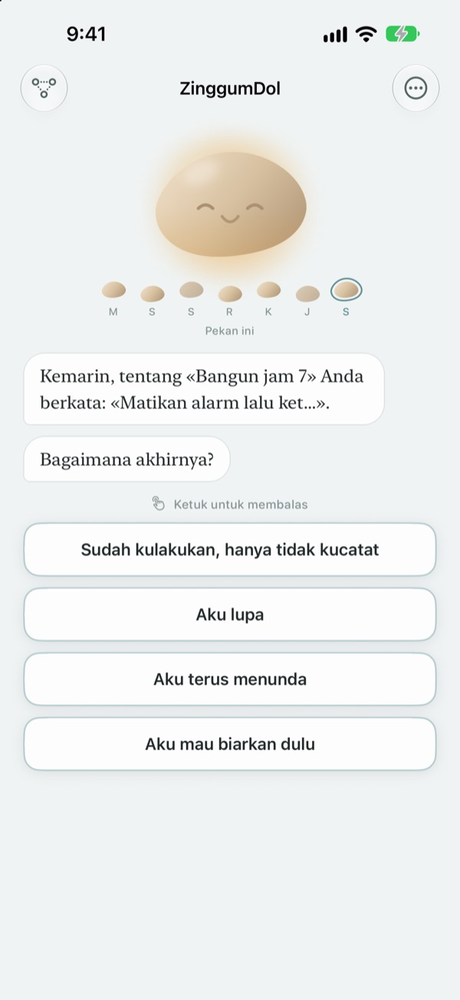
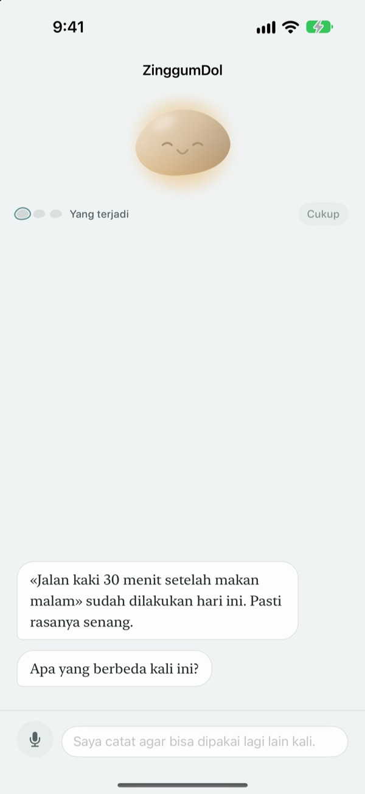
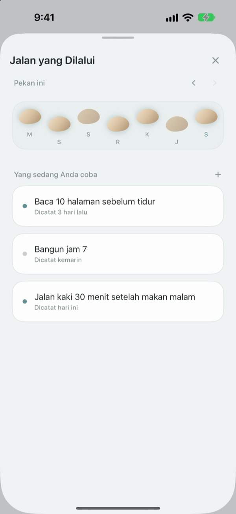
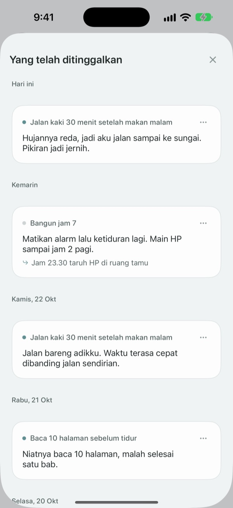

Salah langkah bukan berarti
jatuh ke sungai
Di hari target Anda terlewat, kerikil yang menyapa lebih dulu. Ia bertanya apa yang terjadi, bukan apa kesalahan Anda, lalu mengembalikan kejadian dan perasaan Anda secara terpisah.
Mengobrol, mencatat, dan melihat jalan yang dilalui itu gratis. Tanpa daftar, tanpa iklan.

Mengobrol dengan kerikil
Hari ini Anda berniat jalan sore, tapi tidak jadi. Ketuk jawaban atau tulis sendiri, dan kerikil membalas persis seperti di aplikasi.
Saat hari tak berjalan sesuai rencana, Anda menyalahkan diri sendiri?
Di malam Anda melewatkan olahraga, pikiran pertama biasanya "aku ini kenapa, sih?". Kalau dilihat lebih dekat, ada lembur, hujan turun, dan Anda kelelahan. ZinggumDol menanyakan apa yang terjadi dan bagaimana perasaan Anda di giliran terpisah, lalu meletakkan keduanya berdampingan. Begitu Anda melihat penyebabnya keadaan, bukan tekad, langkah kecil berikutnya lebih mudah ditemukan.
Kerikil menyapa lebih dulu
Tetapkan target, dan kerikil akan memperhatikan hari-hari Anda berhasil dan hari-hari Anda tersendat. Saat satu hari terlewat, ia bertanya "apa yang terjadi?", bukan "kenapa tidak?", dan ia ingat cerita Anda sebelumnya.
Kalau sedang berat untuk menulis, ucapkan saja. Suara dikenali di perangkat Anda dan rekamannya tidak pernah disimpan.

Hari-hari Anda seperti batu loncatan
Setiap minggu terbentang sebagai deretan batu. Hari yang tidak Anda pijak tetap ada di sana; tidak ada yang dihapus.
Meski ada satu dua yang kosong, Anda bisa melihat jalannya terus berlanjut.

Baca lagi yang Anda tulis
Apa yang terjadi, bagaimana perasaan Anda, dan apa yang akan dicoba berikutnya terkumpul menurut tanggal. Baca lagi hari ketika Anda tersendat dengan cara yang sama, dan lihat apa yang berhasil.
Widget menampilkan sepatah kata dari kerikil di Layar Utama, dan pengingat pada jam pilihan Anda mengajak menengok hari itu.

Mulai dalam tiga langkah
- 1
Tulis satu target
Misalnya "Jalan kaki 30 menit setelah makan malam".
- 2
Buka aplikasi di akhir hari
Kerikil menanyakan bagaimana hari Anda. Dengan pengingat, Anda tidak akan lupa.
- 3
Ketuk atau tulis jawaban
Anda bisa berhenti kapan saja dengan
Aku mau biarkan dulu.
Begini alur percakapannya
- Yang terjadi
- Hanya fakta: apa yang menghalangi
- Perasaan
- Bagaimana perasaan Anda sekarang, dalam skala lima
- Melihat kembali
- Kerikil mengembalikan kejadian dan perasaan Anda secara terpisah
- Langkah berikutnya
- Anda sendiri yang memilih langkah kecil, lima menit sudah cukup
- Penutup
- Di hari yang benar-benar berat, ia tidak bertanya lagi dan mengajak beristirahat
Anda bisa berhenti kapan saja, dan yang sudah Anda katakan tetap tersimpan.
Mengobrol dan mencatat gratis. Pro kalau ingin lebih.
Gratis
- Semua percakapan dengan kerikil
- Hingga tiga target
- Bicara alih-alih mengetik
- Jalan yang Dilalui dan semua tulisan Anda
- Widget dan pengingat harian
- Kunci dengan kode sandi
ZinggumDol Pro
- Target sebanyak yang Anda mau
- Pilihan enam tekstur kerikil
- Ekspor catatan sebagai file teks
Sekali beli, selamanya milik Anda. Bukan langganan.
Layar pembayaran tidak pernah muncul di tengah percakapan. Di perangkat baru atau setelah instal ulang, ketuk Pulihkan Pembelian di Pengaturan.
Pertanyaan umum
Apakah saya harus menjelaskan setiap hari yang terlewat?
Tidak. Ketuk Aku mau biarkan dulu kapan saja dan percakapan langsung selesai. Yang sudah Anda katakan tersimpan, jadi bisa dilanjutkan nanti.
Saya sudah melakukannya, tapi aplikasi bilang belum.
Ketuk Sudah kulakukan, tapi tidak kucatat. Kerikil menerima koreksi itu dan malah bertanya apa yang membantu. Yang berhasil disimpan, dan akan diingatkan lagi saat Anda tersendat berikutnya.
Ke mana perginya yang saya ucapkan?
Suara Anda diubah menjadi teks di perangkat dan rekamannya tidak pernah disimpan. Di perangkat yang didukung, kalimat Anda juga dirapikan agar mudah dibaca, itu pun di perangkat.
Berapa banyak target yang bisa saya buat?
Tiga gratis. Kalau sudah selesai dengan satu target, gunakan Lepaskan di Jalan yang Dilalui untuk mengosongkan tempat. Untuk lebih dari tiga, Anda perlu ZinggumDol Pro.
Apakah ZinggumDol Pro berlangganan?
Tidak. Anda membayar sekali dan menjadi milik Anda. Di perangkat baru atau setelah instal ulang, ketuk Pulihkan Pembelian di Pengaturan.
Bisakah orang lain membaca jurnal saya?
Tidak ada akun. Catatan Anda hanya ada di perangkat dan iCloud milik Anda, dan Anda bisa mengunci aplikasi dengan kode sandi di Pengaturan. Tulisan Anda tidak pernah dikirim ke pengembang. Statistik penggunaan anonim juga bisa dimatikan di Pengaturan.
Bagaimana cara mengubah jam pengingat?
Di Pengingat harian pada Pengaturan, Anda bisa menyalakan, mematikan, dan memilih jamnya.
Apakah kerikil juga mengingatkan keberhasilan saya?
Ya. Ia mengingat apa yang membantu Anda, dan di hari yang berat ia mengingatkan sesuatu yang baru-baru ini berhasil Anda lakukan.
Bagaimana menghapus semuanya?
Ketuk Hapus semua catatan di Pengaturan. Target dan catatan hilang selamanya, termasuk di perangkat lain yang tersambung lewat iCloud. Pengaturan dan pembelian tetap ada. Dengan Pro, Anda bisa menyimpan salinan dulu lewat Ekspor catatan.
Bagaimana cara menghubungi Anda?
Lewat "Kirim Masukan" di Pengaturan aplikasi, atau kirim email ke alamat di bawah.
Ada pertanyaan atau masukan? Tulis ke leeo@kakao.com.